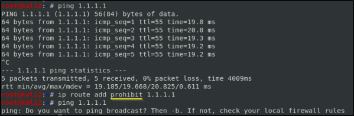
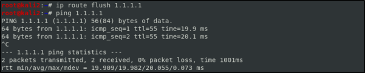

make unreachable a host
So, aside from using static routes to make something reachable, is possible to use static routes to make something unreachable. And the three most common ways of doing that is through the
ip command and his options:
•
prohibit where the kernal generates an ICMP prohibited message
example in which we don't want that this host can be able to access to the Cloudflare DNS resolver 1.1.1.1
 and then we can
flush the the ip:
 •
blackhole where the requests just gets discarded and we don't get any type of feedback
•
unreachable where generates an ICMP unreachable
the changes made with the
ip command at the routing table aren't going to be persistent through a system restart.